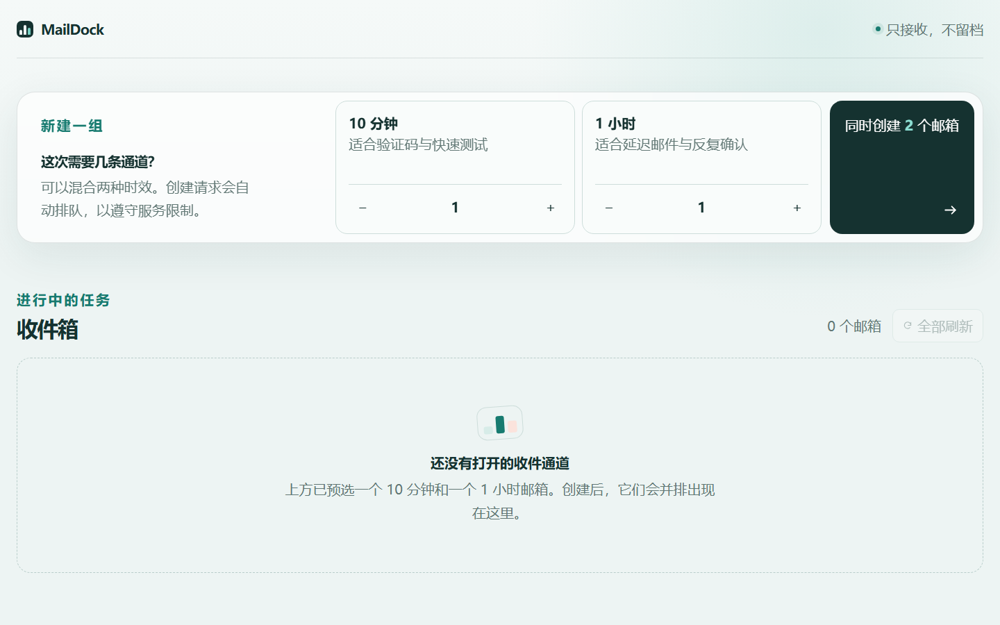
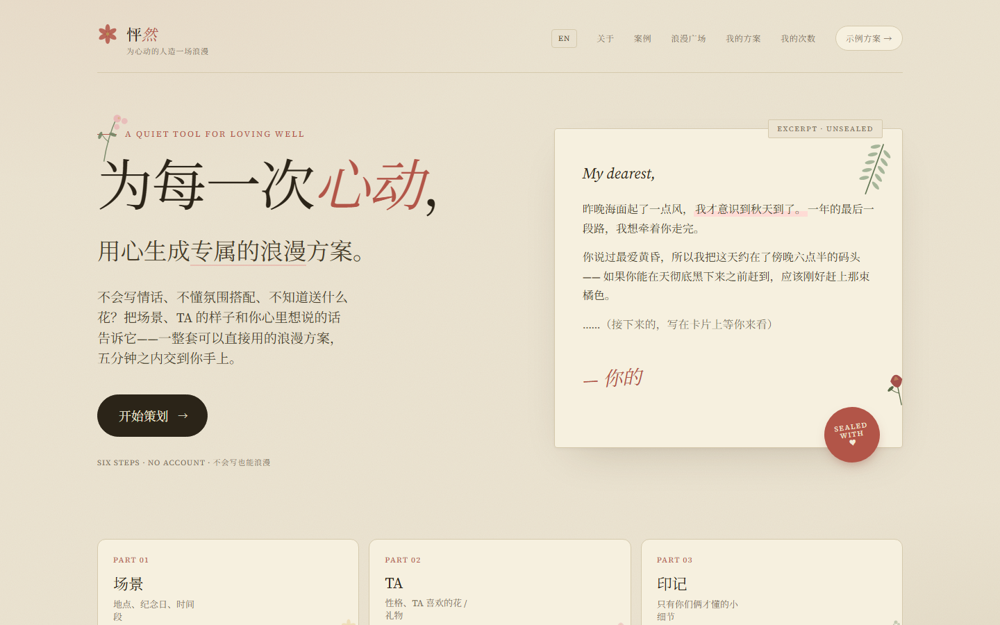

Repeat 对我来说，就是在每天的重复里把事情做好。我的人生信条很简单：脚踏实地，一步一步做好每一件事。先把眼前的一步走稳，再继续下一步。
HELLO / 你好2026
在代码、设计与真实生活之间，持续记录想法，也认真把它们做出来。
SELECTED WORK / 近期作品
开源工具 · 部署自动化
浏览器插件 · AI 阅读工具

Web 应用 · 临时邮箱

Web 应用 · 浪漫方案生成